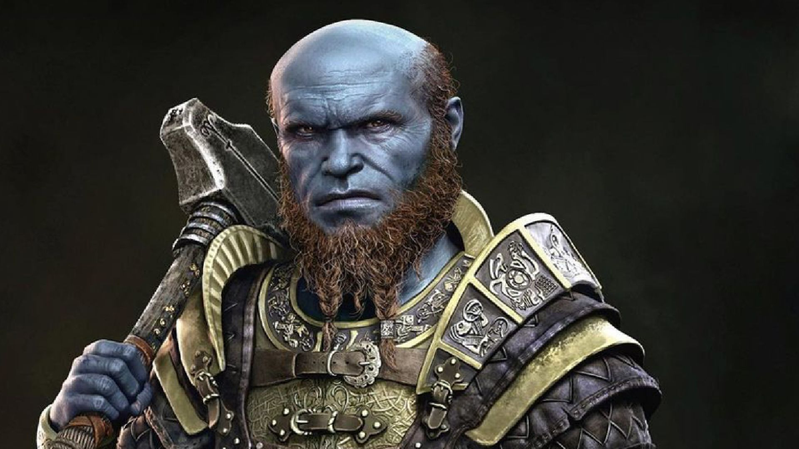

Brok
 Brok costumava ser um ferreiro relativamente desconhecido junto com seu irmão Sindri. Querendo fazer um nome para si mesmos, eles criaram o Mjölnir e o deram aos Aesir. O próprio Thor ficou satisfeito com o martelo e o usou para causar um genocídio nos gigantes junto com uma série de outras atrocidades.
Sindri se sentiu culpado pelo que fizeram e conseguiu convencer Brok de que, como eles criaram o martelo que causou tanta devastação aos nove reinos, era responsabilidade deles consertar. Então, juntos, eles criaram o Machado Leviatã, uma arma que rivalizava com o Mjölnir,
mas no processo o próprio Brok foi morto por uma aranha que queria vingança contra Brok por matar seus parentes. Sindri não querendo perder seu irmão, viajou para Alfheim para recuperar sua alma antes que ela fosse para a luz de Alfheim e depois para Helheim. Ele foi capaz de obtê-lo e usá-lo foi capaz de reviver Brok,
mas ficou tão traumatizado com o evento que decidiu nunca contar a Brok sobre isso, pois não queria sobrecarregar seu irmão com a culpa. Brok acordou, sua pele agora azul, mas não parecia se importar nem um pouco e junto com seu irmão Sindri conseguiu terminar o Machado Leviatã.
Eles logo foram procurados por Laufey,
o Apenas o último guardião de Jotunheim e sabendo que ela era uma boa pessoa, eles deram a ela o machado na esperança de que ela pudesse restaurar o equilíbrio dos nove reinos. No entanto, a culpa pelo que Thor fez ainda continuou afetando os irmãos Huldra, ficou tão ruim que eles não podiam mais trabalhar juntos.
Eles dividiram a marca bem no meio e seguiram caminhos separados com Brok ainda criando armas. Eventualmente, ele conheceu um anão chamado Andvari que estaria em dívida com Brok, ele também conheceu Mimir antes de sua prisão e ambos fizeram algo ruim e cada um culpou o outro por isso.
Ele também criou várias lojas em Midgard e uma em Muspelheim usando o calor extremo para fazer mais de suas criações. Ele também tinha alguns negócios em Alfheim, mas não tinha mais permissão para retornar por causa de um incidente.